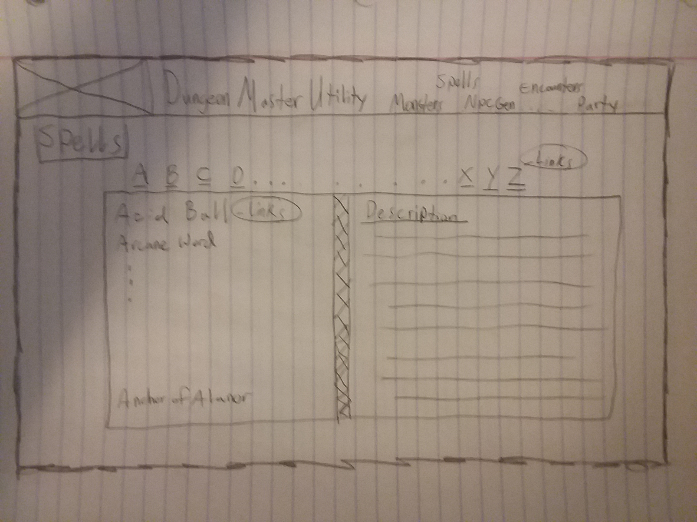
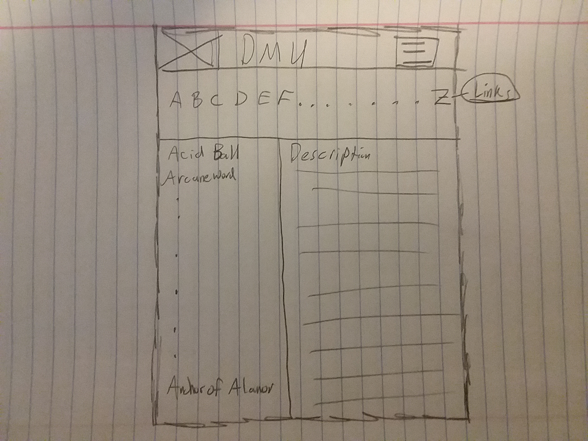

Dungeons & Dragons 5th Edition Dungeon Master Helper
Purpose
This website will be to help people who are interested in playing Dungeons and Dragons as the Dungeon Master. The site will assist in monster references, spell references, Random NPC generation, random encounter generation, and lastly Party management.
Content Delivery
The website will have the 5 pages as explained below in the page descriptions section. It will function as described, and nothing more.
Target Audience & Persona
The target audience of my website will be people interested in D&D. This will be both dungeon masters (mostly dungeon masters in fact) and also the players themselves.
Personas
- Name:Josh Forrester
- Occupation:student
- Age:24
- Interests:Electrical Engineering, playing D&D
- Motivation:Josh plays D&D weekly and has been wanting to get into hosting his own games and has decided that he would, if only it were a little more simple to run a game. If he could have some utility tool to help him he thinks he could accomplish his goal of running fun, exciting, and memorable games.
- Environment:Josh is very familiar using a laptop, desktop, and other electrical equipment. Websites are nothing new to him. He is willing to take the extra effort to familiarize himself with a tool to master it.
- Name:Korey
- Occupation:student
- Age:26
- Interests:Computer Science, full-stack Web design, D&D
- Motivation:Korey's been running D&D games for over a year, and is really strained for preperation time as he nears his college career end. He wishes that there was an easier resource that would assist him in making his life easier.
- Environment:Korey uses computer's all the time. He is often found programming something with his computer, and loves tinkering with technology in general. He's just ordered a 3D printer and is very excited to dive into that as well.
Page Descriptions
-
Page 1: Party Management
This page will be the party management page. This page includes a form to fill out to add a new character to your characters in your party. The page will have an add button, which will run some javascript to add the information provided into a form into a table that holds the party info.
- Page 2: Monster References
This will be an alphabetical list that people can select from to get reference information on the monster. There will be an alphabetical list on the top of the page going horizontally, clicking one, will bring up a list of the monsters under that letter, and you can read about them.
- Page 3: Spell References
This will be the same layout as monster reference. Horizontal alphabet on the top, and clicking one, brings up the spells under that letter.
- Page 4: NPC Generator
This will have a form you can fill out, and a button you can press to fill in the remaining information. This allows for fully customizable, or completely random, or a nice mixture of different NPCs.
- Page 5: Random Encounter Generator
This will be a simple layout of 4 buttons called "easy", "normal", "difficult", and "deadly". Upon clicking one the page underneath the buttons will fill in with an appropriate encounter of monsters based on their challenge rating, and the current party's level.
Wireframe Sketches
- Spells Page example:
- 
- 